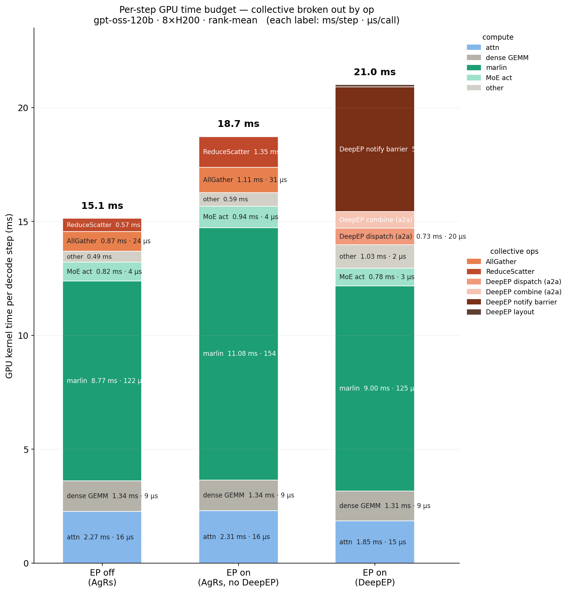
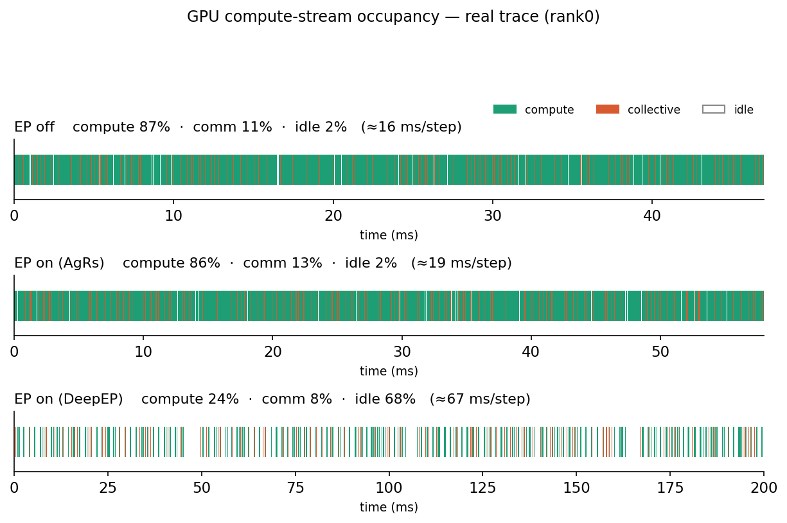
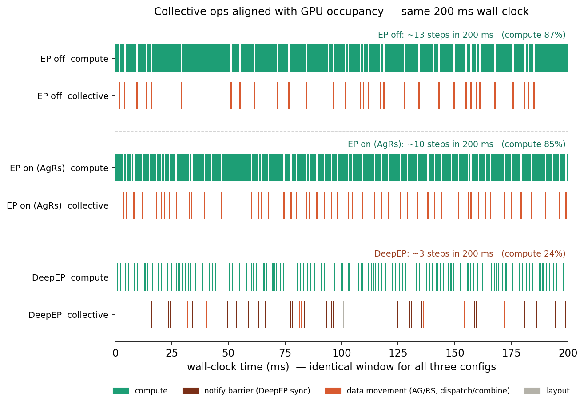

Overview
A low-level analysis of how data moves under EP ON vs EP OFF,
and what effect each has on performance.
Experiment Setup
| Parameter | Value |
|---|---|
| GPU | H200 × 8ea |
| Framework | vLLM v0.18.0 |
| DP | 4 |
| EP | ON / OFF |
| max-num-seqs | 256 |
| ISL / OSL | 1k / 1k |
We compare three configurations: EP OFF (AllGather + ReduceScatter), EP ON (AgRs) (AllGather + ReduceScatter-based EP), and EP ON (DeepEP).
Per-Step Time Budget

EP OFF: 15.1 ms — matmul dominates (9.77 ms). AllGather + ReduceScatter total ~1.4 ms.
EP ON (AgRs): 18.7 ms — similar matmul (11.08 ms). AllGather grows (1.11 ms), ReduceScatter appears (1.15 ms).
EP ON (DeepEP): 21.0 ms — DeepEP dispatch/combine adds ~1.5 ms. The notify barrier is the dominant overhead (6.73 ms).
EP ON (AgRs): 18.7 ms — similar matmul (11.08 ms). AllGather grows (1.11 ms), ReduceScatter appears (1.15 ms).
EP ON (DeepEP): 21.0 ms — DeepEP dispatch/combine adds ~1.5 ms. The notify barrier is the dominant overhead (6.73 ms).
GPU Occupancy Timeline

| Config | Compute | Comm | Idle | ms/step |
|---|---|---|---|---|
| EP off | 87% | 11% | 2% | ≈16 |
| EP on (AgRs) | 86% | 13% | 2% | ≈19 |
| EP on (DeepEP) | 24% | 8% | 68% | ≈67 |
EP OFF and EP ON (AgRs) show similar compute utilization, while DeepEP's idle time spikes to 68%. The primary cause is the notify barrier synchronization blocking the GPU.
Collective Ops Aligned

Within the same 200 ms window:
- EP off: ~13 steps · compute 87% — collective ops interleave briefly between compute
- EP on (AgRs): ~10 steps · compute 85% — collective frequency increases but compute remains dense
- DeepEP: ~3 steps · compute 24% — both compute and collective are sparse, idle gaps dominate
Takeaway: Enabling EP unlocks per-expert routing, but GPU utilization
varies dramatically depending on the collective operation type and synchronization strategy.
For DeepEP, the performance bottleneck is not dispatch/combine itself but rather the
notify barrier blocking.